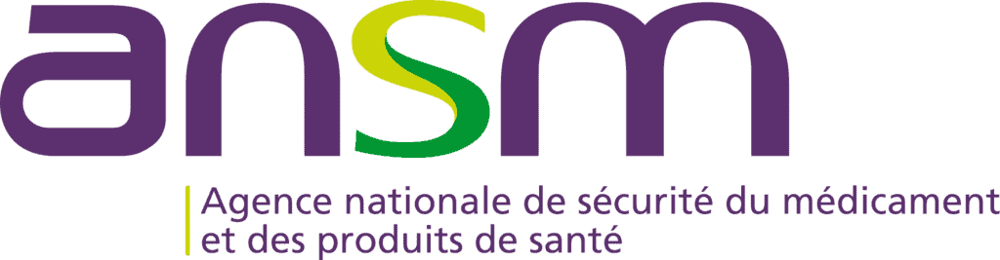
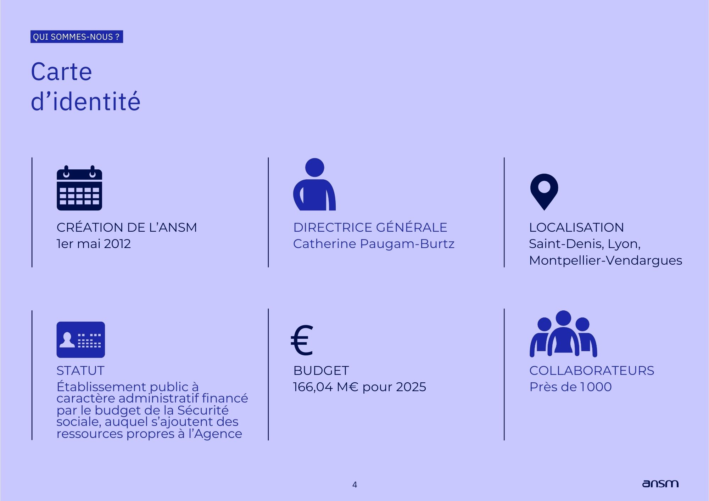
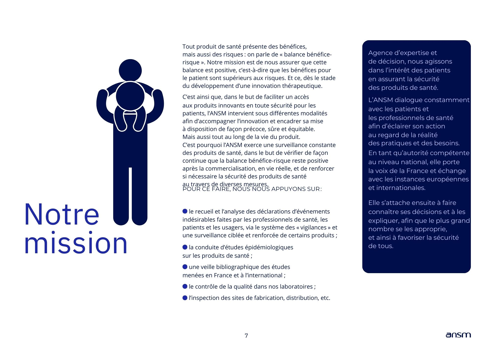
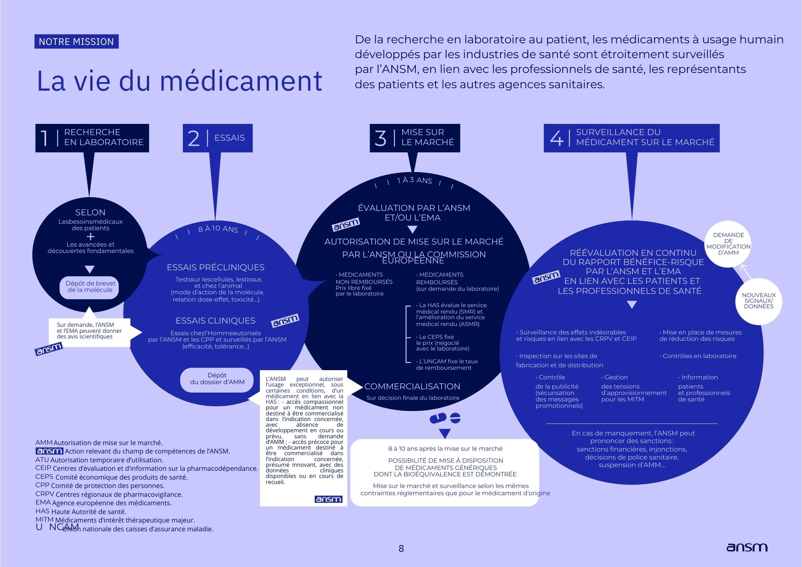
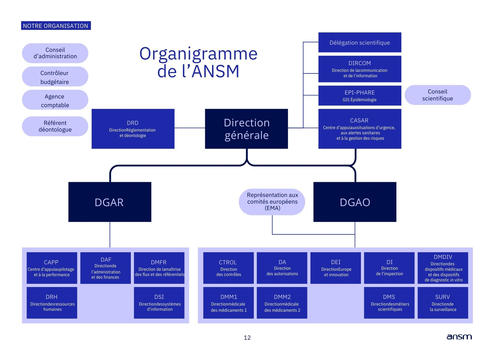

Étudiant en BTS SIO à IMIE Paris
Bienvenue sur mon portfolio
Bonjour, et bienvenue sur mon portfolio. A travers ce dernier, je souhaite partager mon parcours, mes compétences ainsi que mes réalisations. Mais avant ça, je vais d'abord me présenter. Je suis Desmond Domie, étudiant en BTS SIO à l'IMIE Paris, et apprenti à l'ANSM. Ayant pris goût pour l'informatique lors d'un forum organisé par collège en 3ème, j'ai été désireux de poursuivre dans cette voie. Par ce fait là, je suis entré en bac pro SN RISC (Systèmes Numériques) (Réseaux Informatique et Systèmes Communicants). Pendant ces trois années de lycée, j'ai pu faire de nombreux stages qui m'ont permis d'avoir des compétences et de mettre en pratique ce que l'on apprenait en cours théorique. J'ai obtenu mon bac, et j'ai ainsi décidé de continuer mon cursus en bts en alternance. J'ai aujourd'hui l'ambition d'aller jusqu'au bac +5 ERIS afin de devenir ingénieur systèmes et réseaux.
ANSM | Septembre 2024 - Août 2026
B&A Conseil | Mars 2022 - Avril 2022
SOS GSM | Novembre 2021 - Décembre 2021
Cyber Store | Juin 2021 - Juillet 2021
Récupération de données
Global Info | Janvier 2021 - Février 2021
IMIE Paris | 2024- 2026
Spécialisation Systèmes et Réseaux
Au programme :
Lycée La Tournelle | 2019-2022
Au programme :
Baccalauréat profesionnel en Systèmes Numériques Option Réseaux Informatiques obtenu en 2022
Collège André Malraux | 2015-2019
Brevet obtenu en 2019
Nom de l'entreprise

Secteur d'activité : Santé publique
Localisation : Saint Denis (93)
L’ANSM ou l’Agence Nationale de Sécurité du Médicament et des produits de santé est l’acteur public qui permet, au nom de l’État, l’accès aux produits de santé en France et qui assure leur sécurité tout au long de leur cycle de vie. Au cœur du système de santé, elle agit au service des patients et de leur sécurité, aux côtés des professionnels de santé et en concertation avec leurs représentants respectifs.




Travaillant au département du DSGI (Département des Services Généraux et de l'Immobilier) qui est lui même rattaché à la DAF (Direction de l'Administration et des Finances), j'occupe le poste de technicien télécom et Système Réseau. Voici les différentes missions auxquelles je suis mener à faire :
Technologies : [VMWare, Ubuntu]
GLPI (Gestion Libre du Parc Informatique) est un logiciel open source permettant aux entreprises de suivre et de gérer leurs parcs informatiques, et de gérer les demandes de support informatique. Il permet aussi de centraliser les informations sur les ordinateurs, les périphériques, les logiciels, les utilisateurs, les problèmes techniques, etc., pour faciliter la gestion des services informatiques. Une documentation plus explicative se joindra ci dessous.
Voir la documentationTechnologies : [VMWare, Debian]
Mise en place d'un serveur mail Postfix sur lequel on a pu le tester avec un client Kmail. Documentation explicative se joint ci dessous.
Voir la documentationTechnologies : [VMWare, Ubuntu]
Mise en place d'un serveur téléphonique Asterisk sur lequel nous avons pu le tester avec un softphone. Une documentation allant plus en détail se trouve ci dessous.
Voir la documentationTechnologies : [VMWare, Ubuntu, Windows]
Samba est un service Linux dédié à partager des fichers entre machines Linux et Windows. Une documentation explicative se joint à cette section.
Voir la documentationTechnologies : [VMWare, WindowsServer]
Le DHCP sert à attribuer automatiquement les paramètres réseau aux appareils, notamment l’adresse IP, le masque, la passerelle et les DNS. Il simplifie totalement la gestion d’un réseau sans qu'on ait à le faire manuellement. On a ensuite ajouter à ça, un acitve directory afin d'en faire démonstration. Une documentation explicative se joint à cette section. Une documentation se joint ci dessous.
Voir la documentationTechnologies : [VMWare, ESXI]
PfSense est un système d'exploitation qui permet de "transformer" un ordinateur en pare-feu, mais également en routeur. Il Tout comme un pare-feu, il filtre le trafic entrant et sortant, et protège des attaques types Dos. Côté routeur, il peut créer des Vlans, et propose de pouvoir gérer son DHCP et DNS directement via PfSense. Une documentation se joint ci dessous.
Voir la documentationTechnologies : [VMWare, Ubuntu]
HAProxy est un logiciel open source d’équilibrage de charge et de reverse proxy conçu pour répartir efficacement le trafic réseau (HTTP, TCP) entre plusieurs serveurs. Il améliore la performance et la stabilité d’un site, il agit comme intermediare entre les clients et les serveurs et enfin, il permet de rediriger le trafic vers le serveur "relais" si le principal tombe en panne. Une documentation se joint ci dessous.
Voir la documentationTechnologies : [Packet Tracer]
Cisco Packet Tracer est un logiciel de simulation réseau qui permet d’apprendre, tester et visualiser le fonctionnement des réseaux sans avoir besoin de matériel réel. C'est une application qui permet de créer et de configurer des réseaux virtuels (pc, imprimantes, serveurs et toutes autres equipements connectés) de manière à ce que l'on s'exerce dans un premier temps. On a par exemple tenter de faire communiquer deux Vlans distant entre eux. Une documentation explicative se trouve ci dessous.
Voir la documentationVoici les dernières actualités actualités concernant Linux.
Email : desmond.domie7@gmail.com